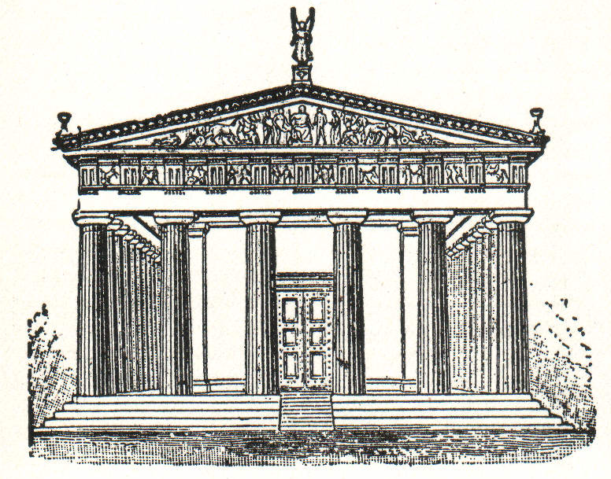

Architectural history explores the evolution of buildings and structures from ancient times to the present. It examines how cultures, materials, technologies, and ideologies shaped the built environment. From the pyramids of Egypt and Greek temples to Gothic cathedrals and Renaissance palaces, each period offers insight into the values and capabilities of the societies that created them. Understanding architectural history not only reveals aesthetic trends, but also tells the story of human progress.
